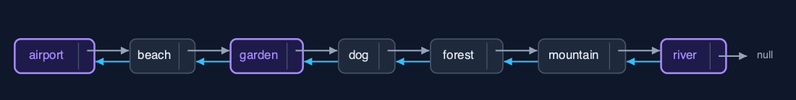
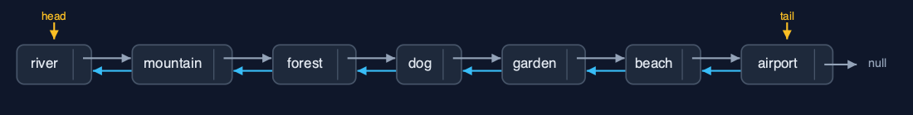
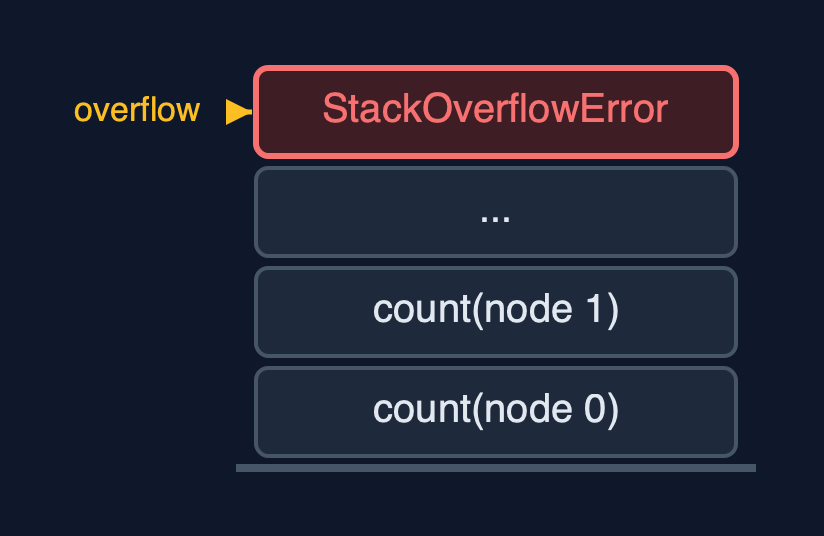

Doubly Linked List (Generic, Recursive), Explained
In one sentence
The generic recursive doubly linked list matches Node<T> data with equals, walks by recursion along next or prev, links in O(1), and uses a frame per node walked.
The picture

A recursive search along prev from the tail: mountain, forest, then dog equals
The everyday idea
Picture guards on a train carrying any kind of cargo. Asked whether a carriage holds a certain crate, a guard checks their own carriage and, if not, asks the next guard along, forwards or backwards, and waits. Each guard only needs to know how to compare two crates.
The 5 acts
Act 1: Recursion along prev, with equals
Starting at the tail, each call compares its photo with the key using equals and, if not equal, recurses on prev. Mountain and forest do not match; dog does, because a record's equals compares name and size: a base case. Display backward follows the same prev pointers to null, five calls deep.

Three calls along prev; the third finds an equal Photo Here are the three calls, from the tail backwards.
What the demo printed:
mountain 1200KB: not equal, recurse on prev
forest 930KB: not equal, recurse on prev
dog 610KB: equals <- base case: found
tail -> mountain 1200KB <-> ... <-> beach 820KB <- head, depth 5Act 2: The same recursion, any type
The same recursive methods work on Integer sizes and String names: five calls deep each, whatever T is.

Five names, linked both ways Here are the names.
What the demo printed:
<Integer> count() = 5, depth 5
<String> head -> beach <-> cake <-> dog <-> forest <-> mountain <- tail, depth 5Act 3: Both ends without recursion; the middle found recursively
Inserting at the beginning and the end uses head and tail: depth 0. In the middle, the node is found recursively and then linked in O(1): search finds the dog at depth 4; insertAtPosition(3, garden) finds the node before at depth 2 and sets 4 pointers; deleteByKey(cake) finds it at depth 3 and changes 2.

After the changes: airport ... river, garden in, cake out Here is the album now.
What the demo printed:
insertAtBeginning and insertAtEnd: depth 0, 6 pointer changes
search(new Photo("dog", 610)) = position 3: 4 equals calls, depth 4
insertAtPosition(3, garden 760KB): found at depth 2, 4 pointers set
deleteByKey(new Photo("cake", 540)): found at depth 3, 2 pointers changedAct 4: Reversal, recursively
Each call swaps its node's prev and next and recurses on the saved old next: seven calls deep for seven photos, 14 pointer changes, then head and tail swap: 16.

The reversed album Here is the reversed album.
What the demo printed:
reverse(): depth 7, 16 pointer changes
head -> river 880KB <-> mountain 1200KB <-> ... <-> airport 700KB <- tailAct 5: The limit of recursion
A million insertAtEnd calls need no recursion; counting the million recursively needs a frame per node and throws StackOverflowError. Generics change what each node refers to; recursion changes how much stack each walk needs.

One frame per node: a million overflow One call per node. Far too many.
What the demo printed:
count() of 1,000,000 nodes: StackOverflowError, one frame per node
generics change what each node refers to; recursion changes how much stack each walk needsThe operations in code
Delete by key: find recursively, unlink in O(1)
/** Deletion by key: find the node recursively, then unlink it in O(1). O(n) time and stack. */
public boolean deleteByKey(T key) {
Node<T> node = find(head, key);
if (node == null) {
return false;
}
deleteNode(node);
return true;
}
private Node<T> find(Node<T> node, T key) {
if (node == null) {
return null; // base case: not found
}
steps.enter();
steps.compare();
Node<T> result = node.data.equals(key) ? node : find(node.next, key);
steps.exit();
return result;
}find compares with equals and recurses on node.next; deleteNode then points the neighbours at each other.
Display backward
/** Display backward: the same recursion, starting at the tail and following prev. O(n) time and stack. */
public String displayBackward() {
StringBuilder s = new StringBuilder("tail -> ");
if (tail == null) {
s.append("null");
}
displayBackward(tail, s);
return s.append(" <- head").toString();
}
private void displayBackward(Node<T> node, StringBuilder s) {
if (node == null) { // base case: past the head
return;
}
steps.enter();
steps.step();
s.append(node.data).append(node.prev != null ? " <-> " : "");
displayBackward(node.prev, s);
steps.exit();
}The same recursion as display forward, started at the tail and following prev.
Reversal
/**
* Reverses the list: swap this node's prev and next, then reverse from the old next; finally
* swap head and tail. O(n) time and stack.
*/
public void reverse() {
reverse(head);
Node<T> t = head;
head = tail;
tail = t;
steps.pointer(2);
}
private void reverse(Node<T> node) {
if (node == null) { // base case: past the old tail
return;
}
steps.enter();
Node<T> oldNext = node.next;
node.next = node.prev;
node.prev = oldNext;
steps.pointer(2);
reverse(oldNext);
steps.exit();
}Swap prev and next, recurse on the saved old next; then swap head and tail.
The operations, and what they cost
| Operation | What it does | Time: best / average / worst | Extra space (call stack) | Same operation as a loop | Steps counted in the demo |
|---|---|---|---|---|---|
| Display forward / backward, count | Recurse along next from head, or prev from tail | O(n) / O(n) / O(n) | O(n) | O(1) | depth 5 for 5 nodes |
| Insert / delete at both ends | Through head or tail; no recursion | O(1) / O(1) / O(1) | O(1) | O(1) | depth 0 |
| Insert at position | Find the node before recursively, then 4 pointers | O(1) at 0 / O(n) / O(n) | O(pos) | O(1) | depth 2, 4 pointers |
| Delete by key / search | Recurse comparing with equals, then unlink in O(1) | O(1) / O(n) / O(n) | O(n) | O(1) | depth 3, 2 pointers; search depth 4 |
| Reverse | Swap prev and next, recurse on the old next | O(n) / O(n) / O(n) | O(n) | O(1) | depth 7, 16 pointer changes |
Compared with related structures
The four doubly-linked-list projects side by side (n nodes):
| Property | Generic, recursive (this) | Generic, loops | String, recursive | String, loops |
|---|---|---|---|---|
| Element types | any T | any T | String | String |
| Both ends | O(1), no recursion | O(1) | O(1), no recursion | O(1) |
| Walks | O(n) time and stack | O(n) time, O(1) space | O(n) time and stack | O(n) time, O(1) space |
| A million nodes | StackOverflowError | fine | StackOverflowError | fine |
The verdict
A study piece bridging lists and trees; use loops or LinkedList<E> in real code.
How to recognise it in code you did not write
find(node.next, key)orfind(node.prev, key)withnode.data.equals(key).
Where you have already met this
doubly-linked-list-genericanddoubly-linked-list-recursive.